CALENDAR CONNECTION GUIDE ·
캘린더 연결부터
첫 동기화까지.
가져오고 싶은 서비스 하나를 고른 뒤, 아래 화면을 보며 따라하세요.
계정 연결 → 캘린더 선택 → 동기화 실행 → 결과 확인 순서로 안내합니다.
외부 계정 연결은 선택 사항입니다. 로컬 캘린더는 로그인 없이 사용할 수 있습니다.
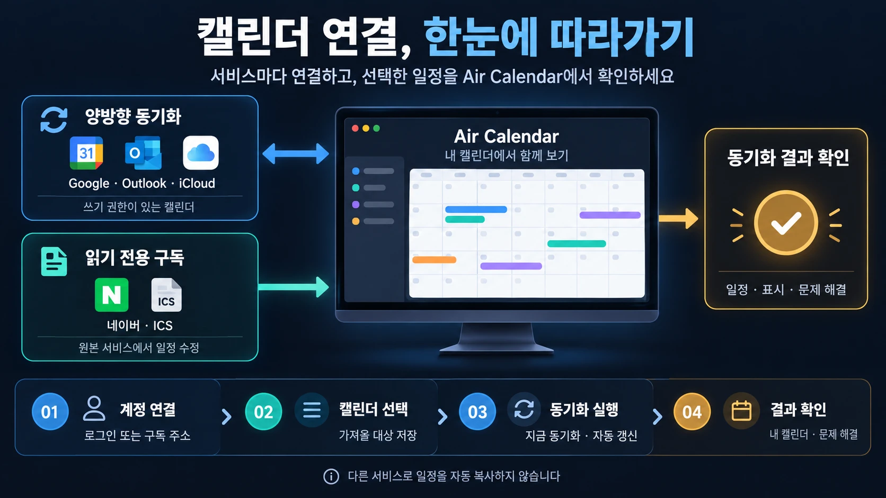
START HERE
01. 설정 화면을 여세요
- Air Calendar 상단의 동기화 아이콘을 누르세요.
메뉴로 열려면 설정 → 캘린더 및 동기화 → 캘린더 · 계정 및 동기화를 차례로 선택합니다. 열린 창 제목은 캘린더 관리입니다.
- 창 위쪽의 ‘연결 및 구독’ 탭을 누르세요.
처음에는 내 캘린더 탭이 보일 수 있습니다. 계정 추가는 연결 및 구독에서 시작합니다. Google Calendar와 주소로 캘린더 구독 카드가 먼저 보입니다.
- 사용할 서비스의 ‘계정 연결’을 누르세요.
Outlook·iCloud·네이버·Yahoo·Zoho·Fastmail을 찾으려면 추가 계정 연결 옆의 서비스 목록 펼치기를 누르고 아래로 스크롤하세요. 이미 연결했다면 버튼이 연결 설정, 다시 연결, 가져올 캘린더 선택 등으로 표시될 수 있습니다.
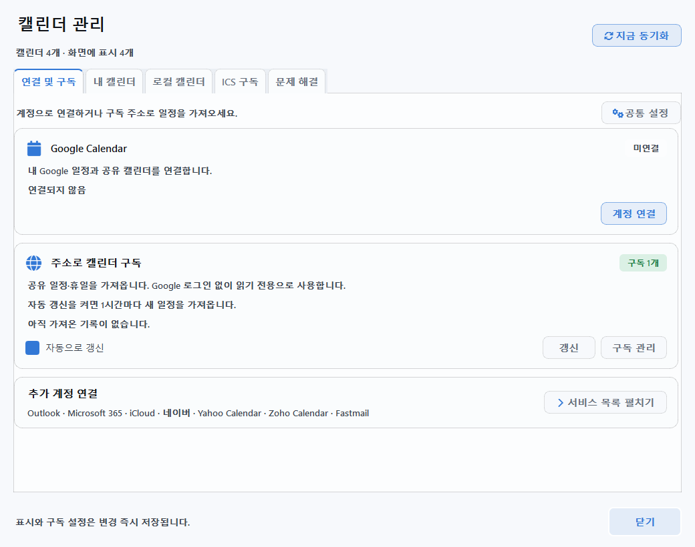
이 페이지의 설정 화면은 현재 앱을 예시 데이터로 연 모습입니다. 계정·캘린더 이름과 연결 상태는 사용자마다 다릅니다. 이미지를 누르면 원본 크기로 볼 수 있습니다. 앱 언어에 따라 일부 새 버튼은 영어로 표시될 수 있으며, 안내문에는 실제 화면의 이름을 함께 적었습니다.
BEFORE CONNECTING
02. 내 서비스의 준비물을 확인하세요
‘양방향’은 해당 서비스의 일정 변경을 주고받는다는 뜻입니다. Google 일정을 Outlook으로 자동 복사하는 기능은 아닙니다. 공유받은 캘린더는 원래 계정의 쓰기 권한에 따라 읽기 전용이 될 수 있습니다.
| 연결할 서비스 | 미리 준비할 것 | 일정 편집 |
|---|---|---|
| Google Calendar ↗ | Google 계정 + 데스크톱 앱용 OAuth JSON 파일 | 쓰기 권한이 있으면 양방향 |
| Outlook · Microsoft 365 ↗ | Microsoft 계정 + 캘린더 연결용 클라이언트 ID | 쓰기 권한이 있으면 양방향 |
| iCloud ↗ | Apple 계정 이메일 + 앱 전용 암호 | 개인 일정 양방향¹ |
| 네이버 ↗ | 네이버 ID + 인증 암호 | 읽기 전용² |
| Yahoo · Zoho · Fastmail ↗ | 계정 이메일 + 서비스에 맞는 인증 암호 | 개인 일정 양방향¹ |
| ICS 구독 ↗ | 서비스가 발급한 iCal / ICS 구독 주소 | 읽기 전용 |
¹ CalDAV의 반복 일정과 초대 일정은 원본 서비스에서 편집합니다. ² 네이버의 Windows 연결 가능 여부는 서비스 정책에 따라 제한될 수 있습니다.
아래에 안내된 앱의 파일 선택·암호 입력란에만 넣으세요. 이 안내 페이지에 입력할 필요는 없습니다. JSON 파일, 앱 전용 암호, 비공개 ICS 주소를 게시판이나 화면 캡처에 공개하지 마세요.
GOOGLE CALENDAR
Google Calendar 연결하기
현재 앱은 사용자가 준비한 데스크톱 앱용 OAuth 인증 파일로 연결합니다. 처음 한 번 Google Cloud에서 파일을 만들고, Air Calendar에서 사용할 Google 계정으로 로그인합니다.
A. 처음 한 번: Google 인증 JSON 파일 준비
- Google Cloud에서 프로젝트를 만드세요.
Google Cloud Console에 로그인합니다. 위쪽 프로젝트 선택 메뉴에서 새 프로젝트를 선택하고, 이름을 입력해 만든 뒤 그 프로젝트를 선택합니다.
- Google Calendar API를 사용 설정하세요.
API 및 서비스 → 라이브러리에서 Google Calendar API를 검색하고 사용 또는 사용 설정을 누릅니다.
- Google Auth Platform에서 동의 화면을 준비하세요.
Google Auth Platform → 브랜딩(Branding)을 엽니다. 처음이라면 시작하기(Get started)에서 앱 이름(예: 내 Air Calendar 연결), 지원 이메일, 연락처 이메일을 입력합니다. 개인 Gmail 계정은 대상(Audience)을 외부(External)로 설정합니다. 조직 내부 계정은 관리자의 정책에 맞춰 선택합니다.
- 테스트 사용자와 캘린더 권한을 확인하세요.
외부 앱을 테스트 상태로 사용할 때는 대상(Audience) → 테스트 사용자(Test users) → 사용자 추가에 실제 연결할 Google 이메일을 넣고 저장합니다. 데이터 액세스(Data Access) → 범위 추가 또는 삭제에서는 Google Calendar API의
https://www.googleapis.com/auth/calendar범위를 선택하고 저장합니다. - ‘데스크톱 앱’ 클라이언트를 만들고 JSON을 내려받으세요.
클라이언트(Clients) → 클라이언트 만들기(Create client)를 누릅니다. 애플리케이션 유형은 데스크톱 앱(Desktop app)으로 선택하고 이름을 입력해 만듭니다. 생성된 클라이언트에서 JSON을 내려받아 PC의 찾기 쉬운 폴더에 보관합니다. 웹 애플리케이션 유형의 파일은 이 설정에 사용할 수 없습니다.
Google 화면은 계정·언어에 따라 다를 수 있습니다. Google 공식 데스크톱 인증 준비 안내 · 동의 화면·테스트 사용자 안내. 위 절차에는 Python 설치나 예제 코드 실행이 필요하지 않습니다.
B. Air Calendar에서 연결하고 가져올 캘린더 선택
- Google Calendar 카드의 ‘계정 연결’을 누르세요.
열린 Google 설정에서 계정 연결을 선택합니다. 인증 파일 · 연결 도움말을 펼치고 인증 정보 파일 → 파일 선택에서 방금 받은 OAuth JSON을 고릅니다. 처음 설정하는 PC에서는 도움말이 이미 펼쳐져 있을 수 있습니다.
- ‘Google 계정 연결’을 누르고 브라우저에서 승인하세요.
사용할 Google 계정을 선택한 뒤 캘린더 접근 권한을 확인하고 승인합니다. 앱은 최대 3분 동안 완료를 기다립니다. 승인이 끝나면 Air Calendar로 돌아오세요. 테스트 사용자로 추가한 계정과 로그인 계정이 같은지도 확인합니다.
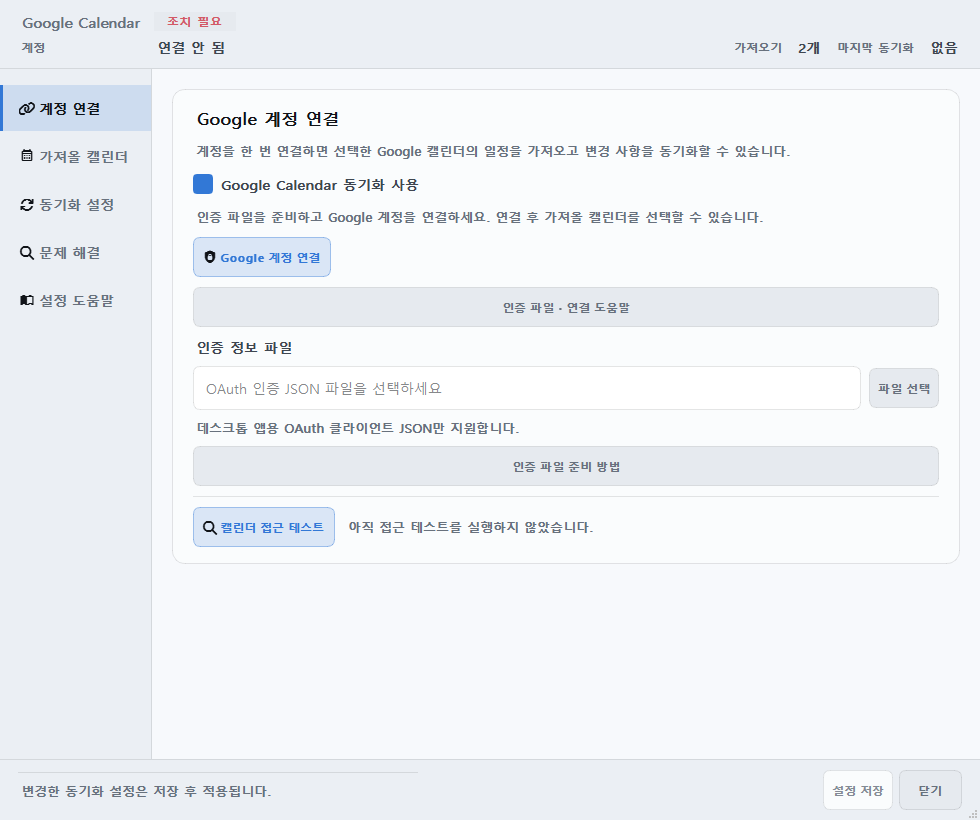
- ‘가져올 캘린더’에서 ‘가져오기’를 체크하세요.
연결이 성공하면 이 화면으로 이동합니다. 개인·업무·공유 캘린더 중 사용할 것만 선택합니다. 새로 만든 캘린더가 안 보이면 목록 새로고침을 누릅니다. 각 항목의 편집 가능 / 읽기 전용도 확인하세요.
- 아래쪽 ‘설정 저장’을 누르세요.
저장 완료 안내를 확인한 다음 닫기를 누릅니다. 설정 저장은 창을 닫지 않습니다. 저장 전에 창을 닫으면 방금 선택한 가져오기 항목이 적용되지 않습니다.
- 캘린더 관리로 돌아와 ‘지금 동기화’를 누르세요.
서비스 카드의 갱신으로 Google만 갱신할 수도 있습니다. 아래 동기화·표시 확인까지 마치면 첫 연결이 끝납니다.
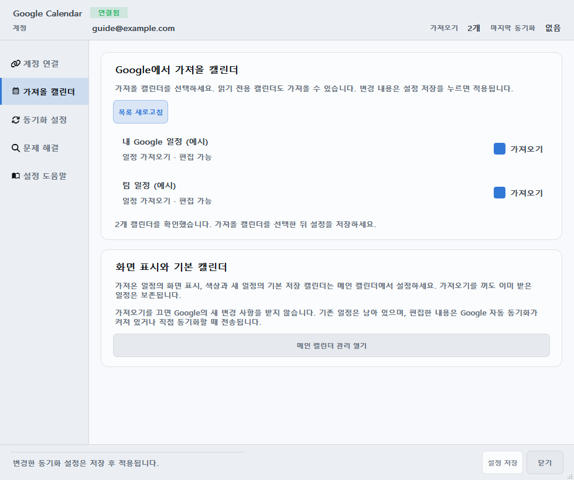
접근 테스트는 권한을 확인하는 기능입니다. 실제 일정이 내려왔는지는 동기화 후 달력에서 확인하세요. Google 자동 동기화는 기본으로 켜져 있으며, 기본 간격은 정기 10분·편집 후 30초입니다.
OUTLOOK · MICROSOFT 365
Outlook 연결하기
개인 Microsoft 계정과 회사·학교 계정을 연결할 수 있습니다. 현재 연결 방식에는 캘린더 연결용 Microsoft 앱의 클라이언트 ID가 필요합니다. 조직에서 ID를 받았다면 준비 과정을 건너뛰고 B부터 따라하세요.
A. 클라이언트 ID가 없을 때: 관리자·앱 등록 담당자 준비
- Microsoft Entra에서 앱을 등록합니다.
Microsoft Entra 관리 센터의 Entra ID → 앱 등록 → 새 등록으로 이동합니다. 이름을 입력하고 지원되는 계정 유형은 모든 조직 디렉터리의 계정 및 개인 Microsoft 계정을 선택합니다. 앱 등록 권한이 없다면 조직 관리자에게 요청하세요.
- 데스크톱 로그인 주소를 추가합니다.
등록한 앱의 인증 → 플랫폼 추가 → 모바일 및 데스크톱 애플리케이션에서
http://localhost를 리디렉션 URI로 추가하고 저장합니다. - 캘린더 권한을 추가합니다.
API 사용 권한 → 권한 추가 → Microsoft Graph → 위임된 권한에서
Calendars.ReadWrite와User.Read를 확인합니다. 조직에서 요구하면 관리자의 동의를 받습니다. - ‘애플리케이션(클라이언트) ID’를 복사합니다.
앱의 개요에 표시된 UUID 형식의 ID를 Air Calendar에 사용합니다. 클라이언트 비밀 키는 필요하지 않습니다.
B. 앱에서 로그인하고 일정 가져오기
- ‘연결 및 구독’에서 추가 서비스 목록을 펼치세요.
Outlook · Microsoft 365 → 계정 연결을 누릅니다. 열린 창에서 1. 계정 연결 탭을 선택합니다.
- ‘앱 등록 · 연결 준비 안내’를 펼치고 클라이언트 ID를 입력하세요.
캘린더 연결용으로 준비한 애플리케이션(클라이언트) ID를 넣습니다. Microsoft 로그인을 눌러 브라우저에서 로그인·권한 승인을 마칩니다. 회사·학교 계정에는 관리자 승인이나 MFA가 필요할 수 있습니다.
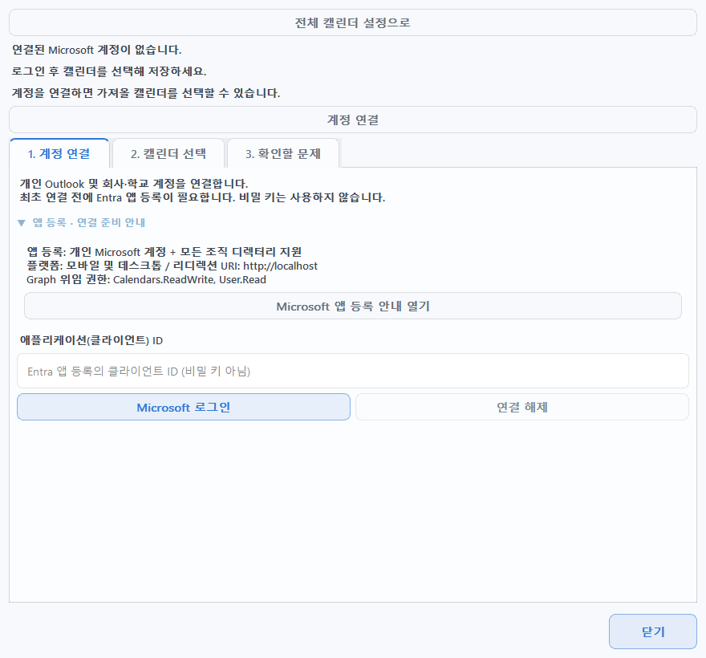
- ‘2. 캘린더 선택’에서 가져올 캘린더를 체크하세요.
선택 캘린더 저장을 누른 뒤 지금 동기화를 누릅니다. 선택을 바꿔 아직 저장하지 않았다면 선택 저장 후 동기화 버튼으로 두 작업을 한 번에 할 수 있습니다.
- 완료 결과를 확인하고, 원하면 자동 동기화를 켜세요.
동기화 완료와 가져온 항목 수를 확인합니다. 자동 갱신을 원하면 캘린더를 저장한 후 5분마다 자동 동기화를 체크합니다. 처음 계정을 연결할 때는 자동 동기화가 꺼져 있습니다.
현재 Outlook은 오늘 기준 과거 120일~미래 400일 범위의 일정을 가져옵니다. 전체 반복 규칙 편집, 초대 응답, 연결된 일정을 다른 캘린더로 옮기기는 지원하지 않습니다. 해당 작업은 Outlook 원본에서 진행하세요.
Outlook 캘린더 선택 화면 보기
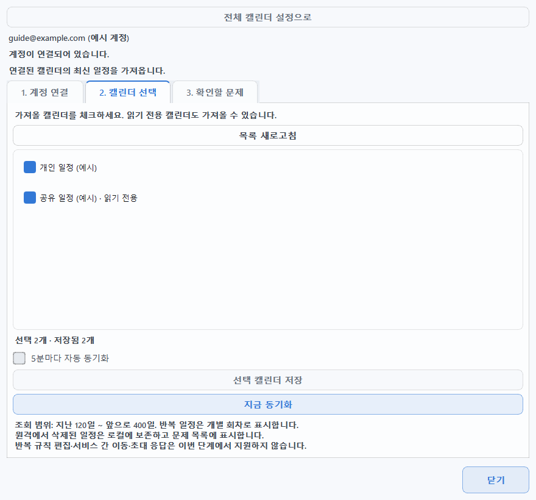
ICLOUD · CALDAV
iCloud 연결하기
A. Apple에서 앱 전용 암호 발급
- 이중 인증이 켜진 Apple 계정을 준비하세요.
Apple 계정 관리에 로그인합니다.
- ‘로그인 및 보안 → 앱 전용 암호’에서 새 암호를 만드세요.
생성 버튼을 누르고 이름(예: Air Calendar)을 입력합니다. 생성된 암호를 앱의 암호란에 붙여넣을 수 있도록 준비하세요. 이 연결에는 Apple 계정의 기본 로그인 암호 대신 앱 전용 암호를 사용합니다.
Apple 공식 앱 전용 암호 안내. 기본 Apple 계정 암호를 변경·재설정하면 기존 앱 전용 암호가 취소되므로 새로 발급해야 합니다.
B. Air Calendar에 이메일·앱 전용 암호 입력
- 추가 서비스 목록의 ‘iCloud → 계정 연결’을 누르세요.
CalDAV 계정 연결 창이 열립니다. 위쪽 연결 서비스가 iCloud인지 확인하고 1. 계정 연결 탭을 선택합니다.
- ‘계정’에 Apple 이메일, ‘앱 전용 암호’에 발급받은 암호를 넣으세요.
서버 주소는 앱이 정합니다. 연결 확인 · 캘린더 찾기를 누르고 캘린더 목록이 표시될 때까지 기다립니다. 연결을 시작하면 암호 입력란이 비워질 수 있습니다.
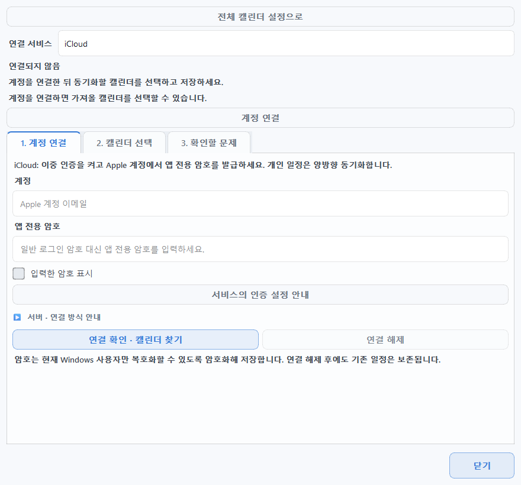
- ‘2. 캘린더 선택’에서 체크하고 ‘선택 저장’을 누르세요.
이어서 지금 동기화를 누릅니다. 저장 전이라면 선택 저장 후 동기화로 진행할 수 있습니다. 로그인·목록 확인만으로는 일정 가져오기가 끝나지 않습니다.
- 일정이 들어왔는지 확인하고 자동 동기화를 선택하세요.
원한다면 캘린더를 저장한 뒤 5분마다 자동 동기화를 체크합니다. 쓰기 가능한 개인 일정은 양방향으로 동기화되며, 반복·초대 일정은 원본 서비스에서 수정합니다.
CalDAV 캘린더 선택 화면 보기
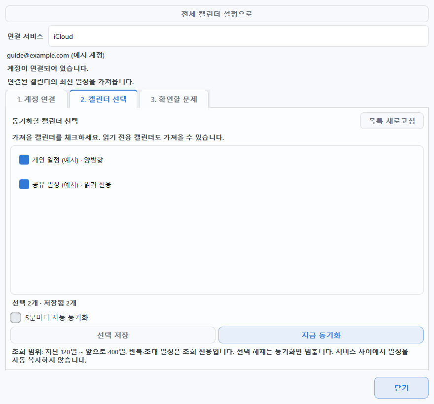
MORE CALDAV SERVICES
Yahoo · Zoho · Fastmail 연결하기
세 서비스는 iCloud와 같은 CalDAV 계정 연결 창을 사용합니다. 연결 및 구독 → 서비스 목록 펼치기에서 해당 서비스의 계정 연결을 누르거나, CalDAV 창 위쪽의 연결 서비스를 바꾸세요.
- Yahoo Calendar
- 계정에 이메일 전체 주소, 앱 전용 암호에 Yahoo에서 발급받은 암호를 넣습니다. Yahoo 공식 앱 암호 도움말에서 발급 가능 여부를 확인하세요. Yahoo! JAPAN 계정은 지원하지 않습니다.
- Zoho Calendar
- Zoho Calendar의 설정 → 동기화(Synchronize) → CalDAV에서 동기화할 캘린더를 먼저 지정합니다. 앱에서는 이메일 전체 주소와 인증 암호를 입력하고, 계정 데이터센터 서버를 계정의 지역에 맞게 선택합니다. 2단계 인증을 사용하면 앱 전용 암호가 필요합니다. Zoho 공식 CalDAV 안내
- Fastmail
- Fastmail의 Settings → Privacy & Security → Connected apps & API tokens에서 앱 암호 관리로 이동해 Calendars 접근을 허용한 앱 암호를 만듭니다. 앱에는 가입 시 이메일 전체 주소와 이 암호를 넣습니다. Basic 요금제는 CalDAV·앱 암호를 지원하지 않습니다. Fastmail 공식 앱 암호 안내
- 서비스별 입력을 마치고 ‘연결 확인 · 캘린더 찾기’를 누르세요.
연결 실패 시 창의 서비스의 인증 설정 안내 버튼으로 해당 서비스의 공식 도움말을 열 수 있습니다.
- ‘2. 캘린더 선택’에서 사용할 캘린더를 체크하세요.
선택 저장 → 지금 동기화 또는 선택 저장 후 동기화로 일정을 가져옵니다. 그다음 필요하면 5분마다 자동 동기화를 켭니다.
CalDAV는 오늘 기준 과거 120일~미래 400일 범위를 가져옵니다. 개인 일정은 쓰기 권한에 따라 양방향으로 동기화하며, 읽기 전용 캘린더와 반복·초대 일정은 원본 서비스에서 편집하세요. 연결된 일정을 다른 캘린더로 옮기는 작업도 지원하지 않습니다.
ICS SUBSCRIPTION · READ ONLY
ICS 주소로 캘린더 구독하기
공휴일·행사·공개 일정처럼 구독 주소가 있는 캘린더를 읽기 전용으로 가져옵니다. Google이나 Microsoft 로그인이 필요하지 않습니다.
- 원본 서비스에서 iCal / ICS 구독 주소를 복사하세요.
캘린더 서비스의 공유·내보내기 설정에서 iCal, ICS, 구독 주소로 표시된 링크를 찾습니다. 브라우저에서 보고 있는 일반 캘린더 웹페이지 주소와는 다릅니다.
https://,http://,webcal://주소를 사용할 수 있습니다. - 캘린더 관리의 ‘ICS 구독’ 탭에서 ‘ICS 구독 추가’를 누르세요.
주소로 캘린더 구독 창이 열립니다. 1. 구독 주소 (필수)에 붙여넣고 2. 캘린더 이름 (필수)에 구별하기 쉬운 이름(예: 팀 행사)을 입력합니다.
- ‘구독 추가’를 누르고 가져오기 결과를 기다리세요.
주소 형식과 이름이 갖춰지면 버튼이 활성화됩니다. 주소 형식이 올바릅니다는 형식 검사 결과이며, 서버에 연결해서 일정을 받았다는 뜻은 아닙니다. 추가한 뒤에는 첫 갱신이 시작됩니다.
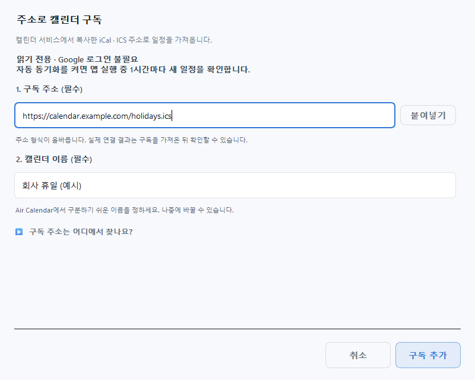
- 추가한 구독을 선택하고 ‘마지막 갱신’ 시각을 확인하세요.
아직 일정을 가져오지 않았습니다가 보이면 첫 수신이 완료되지 않은 상태입니다. 이 구독 갱신을 켠 상태에서 이 구독 지금 갱신으로 다시 시도합니다. 달력에 보이게 하려면 일정 화면에 표시도 켜세요.
ICS 구독의 표시·갱신 설정 화면 보기
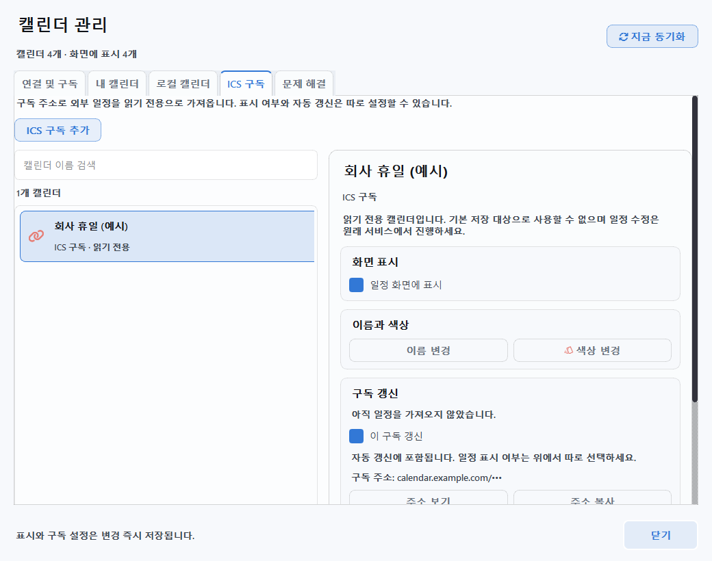
같은 구독을 선택해 구독 주소 수정 → 변경 저장을 사용하면 이름·색상·표시 설정과 기존 일정을 유지할 수 있습니다. 앱이 실행 중이고 자동 갱신과 해당 구독의 갱신이 켜져 있으면 1시간마다 확인합니다. 원본 일정의 추가·수정·삭제는 원본 서비스에서 진행하세요.
CHECK THE RESULT
03. 동기화와 화면 표시를 확인하세요
- 선택한 캘린더를 저장한 뒤 ‘지금 동기화’를 누르세요.
캘린더 관리의 공통 버튼은 연결된 서비스를 함께 갱신합니다. 서비스별 갱신이나 개별 설정의 지금 동기화로 한 서비스만 확인할 수도 있습니다. 기본 단축키는 F5이며, 사용자가 변경했다면 지정한 키를 사용합니다.
- 완료 상태와 실제 일정을 함께 확인하세요.
최근 동기화·갱신 시각과 결과 메시지를 확인합니다. 원본 서비스에 있는 일정 한 개의 날짜·제목을 기억해 두고, Air Calendar에서 같은 날짜로 이동해 보세요. 계정 로그인 성공만으로 일정 수신이 끝난 것은 아닙니다.
- ‘내 캘린더’에서 표시를 켜세요.
가져온 캘린더를 선택하고 상세 영역의 일정 화면에 표시를 켭니다. 원본 일정이 있는데 보이지 않으면 이 표시 설정을 먼저 확인하세요.
- 새 일정의 저장 위치를 정하세요.
새 일정을 외부 캘린더에 만들려면 쓰기 가능한 항목의 기본 저장을 선택합니다. 읽기 전용 항목은 선택할 수 없습니다. 메인 달력의 새 일정 저장에서도 대상을 확인할 수 있습니다.
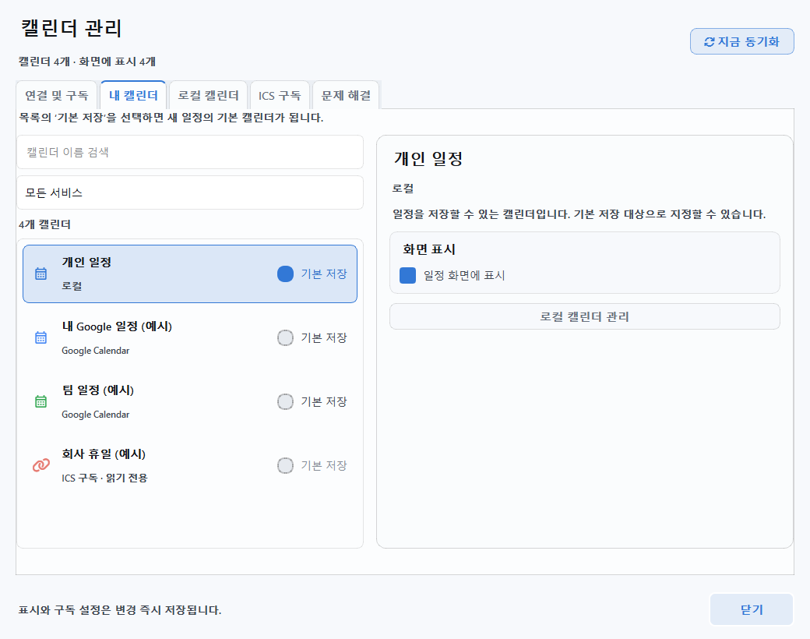
헷갈리기 쉬운 세 가지 설정
- 가져오기 / 캘린더 선택
- 원본의 변경을 가져올 대상을 정합니다. 선택을 끄더라도 이미 가져온 일정은 남을 수 있습니다. Google은 가져오기를 꺼도 남아 있는 편집 가능한 일정의 변경이 원본으로 전송될 수 있으므로, 선택 해제를 연결 해제로 생각하지 마세요.
- 일정 화면에 표시
- 달력에 보일지만 정합니다. 숨겨도 동기화와 기본 저장 설정은 유지됩니다. 메인 화면의 화면 표시 버튼에서도 바꿀 수 있습니다.
- 기본 저장 / 새 일정 저장
- 새로 만드는 일정의 저장 대상을 정합니다. Google 캘린더에 일정을 만들려면 로컬 캘린더 대신 해당 Google 캘린더를 선택하세요.
시험용 일정을 만들어 확인한다면 쓰기 가능한 캘린더를 선택하세요. 그 일정을 수정·삭제하고 동기화하면 원본 서비스에도 반영됩니다. Google 캘린더의 이름 변경은 Google Calendar에서 합니다.
AUTOMATIC UPDATES
04. 자동 갱신을 설정하세요
자동 동기화는 Air Calendar가 실행 중일 때 동작합니다. 처음에는 수동 동기화로 결과를 확인한 뒤 원하는 갱신 방식을 선택하세요. 계정 연결과 자동 갱신 켜기·끄기는 별도 설정입니다.
- Google Calendar
- 연결 설정 → 동기화 설정 → Google 자동 동기화에서 설정합니다. 기본은 켜짐, 정기 동기화 10분, 편집 후 빠른 동기화 30초입니다. 간격을 바꾸면 설정 저장을 누릅니다. 자동 동기화를 꺼도 수동 동기화는 사용할 수 있습니다.
- Outlook · CalDAV 서비스
- 2. 캘린더 선택에서 하나 이상의 캘린더를 저장한 뒤 5분마다 자동 동기화를 켭니다. 새 계정은 기본으로 꺼져 있습니다. 수동 지금 동기화는 자동 갱신이 꺼져 있어도 사용할 수 있습니다.
- ICS 구독
- 전체 ICS 자동 갱신과 개별 구독의 이 구독 갱신을 확인합니다. 자동 갱신 간격은 1시간입니다. 개별 갱신이 켜져 있으면 전체 자동 갱신을 끈 상태에서도 이 구독 지금 갱신을 사용할 수 있습니다.
빠르게 켜고 끄려면 연결 및 구독의 서비스 카드에 있는 자동으로 갱신을 사용하세요. 이 스위치는 즉시 적용됩니다.
Google 자동 동기화 설정 화면 보기
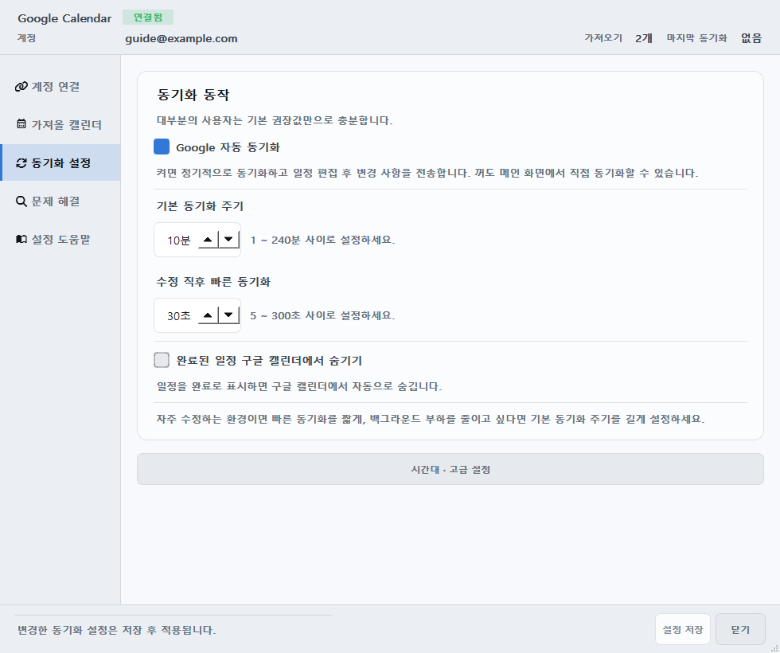
TROUBLESHOOTING
문제가 생겼을 때
캘린더 관리 → 문제 해결에서 해당 서비스를 선택하세요. 상태에 따라 다시 연결, 가져올 캘린더 선택, 보류된 항목 확인, 다시 동기화 등 다음에 할 작업이 표시됩니다.
공통 문제 해결 화면 보기
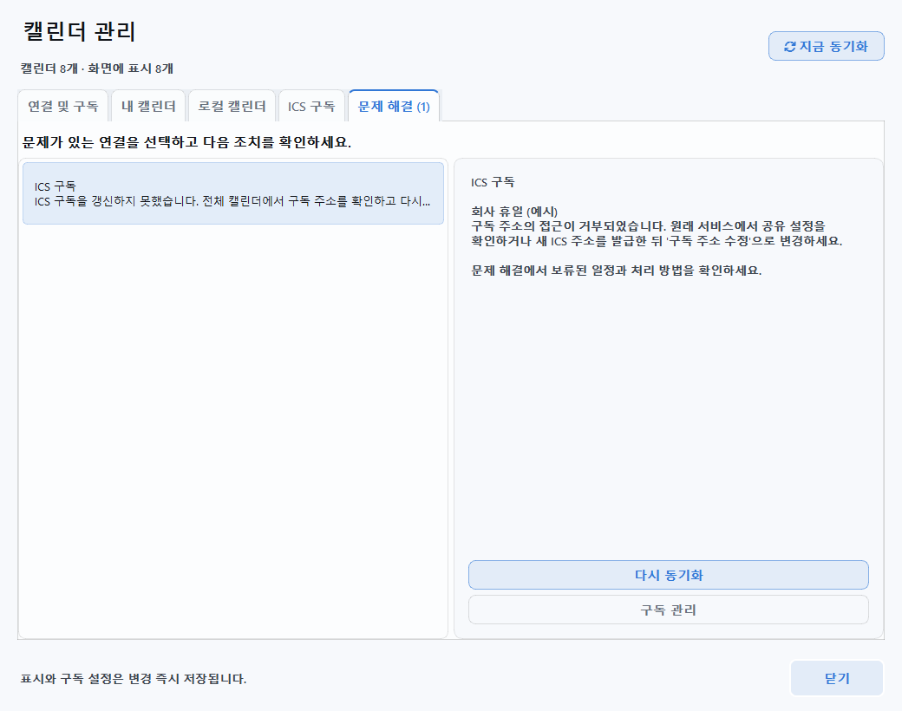
- 로그인은 됐는데 일정이 없어요
- ① 가져올 캘린더를 체크하고 저장했는지 → ② 지금 동기화가 완료됐는지 → ③ 내 캘린더 → 일정 화면에 표시가 켜져 있는지 → ④ 원본 일정의 날짜로 이동했는지 순서대로 확인합니다. Outlook·CalDAV는 과거 120일~미래 400일 범위도 확인하세요.
- ‘지금 동기화’ 버튼을 누를 수 없어요
- 먼저 계정 연결을 완료하고 캘린더를 하나 이상 선택·저장하세요. 이미 작업 중이라면 완료를 기다립니다. 선택을 바꾼 상태에서는 버튼이 선택 저장 후 동기화로 바뀔 수 있습니다.
- Google 인증에 실패해요
- JSON이 데스크톱 앱 유형인지, Calendar API를 켰는지, 테스트 사용자 이메일과 로그인 계정이 같은지 확인합니다. 승인 제한은 Google 화면의 사유를 확인하고 프로젝트 소유자나 조직 관리자에게 문의하세요. 만료·권한 변경은 다시 연결로 재승인합니다.
- 앱 전용 암호를 넣어도 연결되지 않아요
- 서비스 선택·이메일 또는 ID를 확인하고, 취소되지 않은 새 앱 암호인지 확인합니다. Apple 기본 암호 변경, Zoho 데이터센터 선택, Fastmail 요금제, 네이버 계정·플랫폼 제한도 확인하세요. 각 창의 서비스의 인증 설정 안내로 공식 도움말을 엽니다.
- ICS 주소는 올바르다는데 일정이 안 들어와요
- 형식 검사와 실제 수신은 별개입니다. 일반 웹페이지 주소가 아닌 구독 주소인지, 비공개 링크가 만료됐는지 확인합니다. 기존 구독을 골라 구독 주소 수정 → 변경 저장 후 다시 갱신하세요.
- 양쪽에서 수정한 일정이 달라요
- Google 설정의 문제 해결 → 미결 문제에서 내용을 비교하고 로컬 유지 또는 구글 버전 적용을 선택합니다. Google은 충돌 기록을 남기고 원격 내용을 우선 반영할 수 있습니다. Outlook·CalDAV는 각 설정 창의 3. 확인할 문제를 확인하세요.
- 일정 수정·삭제가 제한돼요
- 읽기 전용 캘린더, 네이버·ICS 일정은 원본 서비스에서 편집합니다. CalDAV의 반복·초대 일정과 Outlook의 전체 반복 규칙·초대 응답도 원본 서비스에서 처리하세요.
- 연결을 그만두고 싶어요
- 자동 갱신을 멈추려면 해당 서비스의 자동 갱신을 끄고, 계정 연결을 끊으려면 개별 설정의 연결 해제를 사용합니다. ICS는 구독 해제를 사용합니다. 이 작업은 원본 서비스의 일정을 삭제하지 않으며, 이미 가져온 일정은 남을 수 있습니다. 서버의 앱 접근 권한까지 확인·철회하려면 해당 서비스의 계정 보안 설정도 확인하세요.
문제가 난 서비스 이름, 눌렀던 버튼, 오류 문구를 적어 사용자 요청 게시판에 알려주세요. 화면이나 진단 리포트를 올리기 전 이메일·일정 내용·파일 경로와 인증 정보를 확인해 가려주세요.